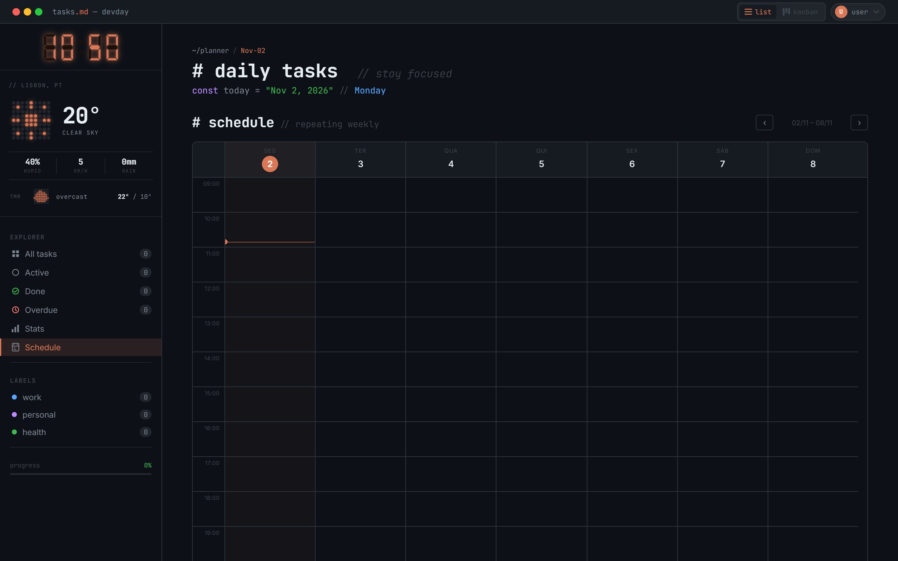

The challenge
I wanted to organise my coding day without jumping between Notion, Jira and loose lists: one simple page, always open, that kept my tasks on any device.

What I built
- Tasks as a list or a kanban board with drag and drop, on phones too.
- A floating 25/5-minute pomodoro timer you can drag around the screen.
- Due dates with a custom calendar, filters and overdue warnings.
- A weekly schedule, notes and statistics.
- Live weather in a dot-matrix widget.
More screens


How it works
JavaScript, HTML and CSS with no build tools or dependencies, split into modules by feature. Firebase Realtime Database syncs tasks across devices, with rules that only let each person read their own data. Sign-in works with Google, email or as a guest. The weather comes from the Open-Meteo API.
What I learned
How to structure a large app in plain JavaScript, without a framework, and how to write security rules for a database the browser talks to directly.